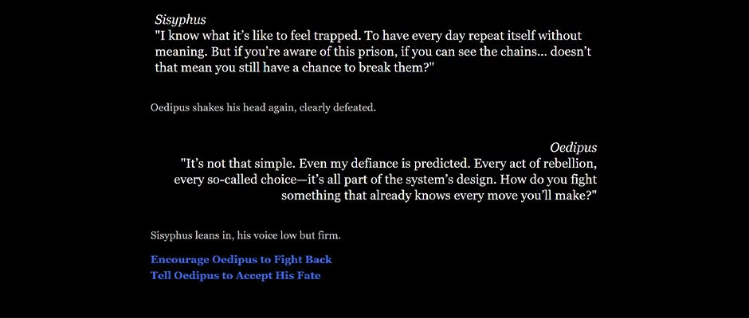
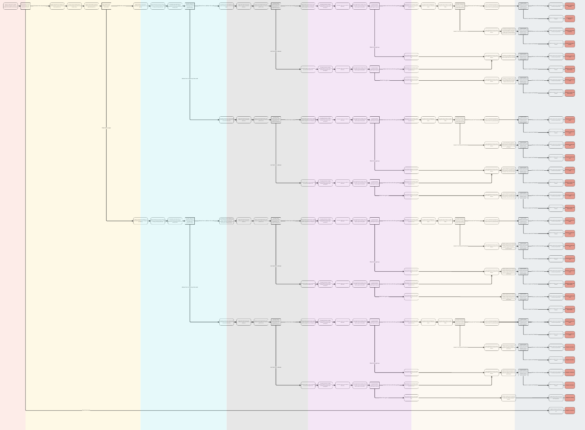

Sisyphus's Rock · Narrative design
Seven acts, eleven endings
The boulder stops. Sisyphus walks down the mountain into a city where an AI predicts every human choice.

- Premise
- Freed from his punishment, Sisyphus finds a modern city run by Z.E.U.S., a system that predicts and controls every choice people make.
- My role
- Solo. Story, setting, characters, branching structure, the full script in Celtx and the build in Twine.
- What I built
- Seven acts. Each one puts a figure from Greek myth in front of the player with a choice about their fate, and those choices lead to eleven endings.
- Design rule
- Sisyphus never decides for anyone else. The player advises, the character chooses, and the consequences follow both.
Theme
Freedom, and what it costs
The story leans on Camus's reading of the myth: life has no meaning handed to it, so people make their own through what they choose. Freedom in the game is never a prize. It always arrives with responsibility for what happens next, both for the character who chooses and for the city around them.
Process
01Every character is a different answer
I cast each act around a myth whose original story is already about fate, then gave them a modern problem with the same shape.
- Oedipus ran from his fate and met it anyway. Now even his defiance is predicted. Resist, or accept it?
- Prometheus stole Z.E.U.S.'s control code, and is afraid of the chaos that freeing people might bring.
- Orpheus lives in a VR program to keep seeing Pandora, who disappeared. Face reality, or stay?
- Icarus designed Z.E.U.S. and regrets it. Fix the system, or give up?
- Pandora left a message about how to stop Z.E.U.S. The last choice is the player's.
02Mapping the branches
I charted every path before writing a scene. Each act splits on one choice, and several branches meet again so the story stays writable, but where you arrive depends on what you encouraged along the way. Almost every route ends where the story began, with Sisyphus deciding whether to go back to the mountain or leave in search of freedom.


03Script first, then Twine
I wrote the whole thing as a screenplay in Celtx first, 59 pages across seven acts and their branches, so each scene could be judged on its own before it became a node. Then I built it in Twine, where each choice is a link between passages.
Materials